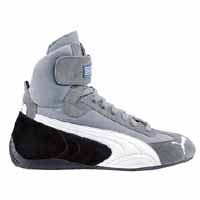
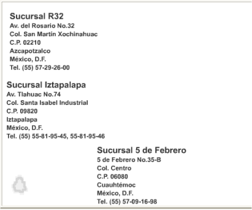

Nosotros
HISTORIA
Somos una Empresa 100% Mexicana que te ofrece una excelente opción a tí, y para tu estilo personal
FAZ con 29 años de experiencia en el ramo del Calzado, es la Empresa que Ideó, Desarrolló y es Lider en la Venta de Calzado por Catálogo.
FAZ cuenta con un gran prestigio respaldado por Productos de Moda, Calidad y Precio Accesible, que solo es posible lograr gracias a sus Investigaciones a nivel Internacional y su Alta Tecnología de Fabricación, que utiliza materiales de alta calidad, para ofrecer mayor durabilidad y comfort.
MISIÓN
Es ofrecer calzado a todo el público una opción moderna y cómoda para su calzado de acuerdo a las normas de calidad actuales de nuestro país.
OBJETIVOS
- Ofrecer una amplia gama de modelos y estilos utilizando materiales de alta calidad.
- Poner al alcance de todo el público todos nuestros productos en cualquier parte del país.
- Retroalimentarnos con todos nuestros clientes y distribuidores para generar nuevos e innovadores estilos.
TODO ACERCA DEL ZAPATO
MUNDO DEL ZAPATO
- Qué conocemos como un buen zapato?
- Cómo se hace un zapato?
- Las herramientas del zapatero
- El manual del zapato
Medidas y el Pie
- Toma de Medidas
- El pie: Contorno, longitud, anchura y volumen
- El pie: Huella y perspectiva
- El puente y las malformaciones más frecuentes
- Sistema óseo y musculatura del pie
- Numeración del ancho
- La documentación del pie
- Numeración del calzado (francesa, inglesa, americana y métrica)
El buen zapato
Siempre se ha dicho que los zapatos son la prenda más importante en el atuendo de un hombre. Y es realmente cierto. Una vestimenta perfecta en todos los detalles se verá irremisiblemente arruinada si está acompañada por unos zapatos de mala calidad. Sería mejor ir por la vida descalzo o en calcetines y disculparse aduciendo motivos religiosos, o argüir el robo del calzado, antes de pasearse con unos zapatos baratos y perder toda respetabilidad. De todas maneras, unos buenos zapatos deben ir siempre acompañados de un buen atuendo, puesto que ni siquiera el mejor calzado del mundo podrían compensar un vestuario más bien pobre. Aunque todo esto pueda parecer un poco exagerado, demuestra en cierto modo la importancia de los zapatos. Si usted no tiene la suerte de poder escoger lo mejor en cada detalle de su vestuario, debería entonces repartir su presupuesto de tal manera que la mayor parte de este vaya destinada a comprar unos zapatos de buena calidad. Todavía mejor si invirtiera todo su dinero destinado para ropa en calzado, puesto que como mínimo necesitará dos pares; después de llevarlos, los zapatos deben dejarse reposar como mínimo un día entero. Volvamos al tema del presupuesto personal. Si para usted resulta importante ir bien vestido y de manera elegante, debe prever que hay que dedicar una parte considerable de sus ingresos y de su tiempo llibre a este fin. El buen estilo no es algo que caiga del cielo y son pocos los que crecen en un ambiente en el que el sentido del gusto les sea inculcado de manera natural. La mayoría de nosotros no llevábamos cuando éramos jóvenes lo mejor y más caro, de manera que al alcanzar la edad adulta teníamos un armario lleno de trajes y camisas a medida, las mejores corbatas y sobre todo, los mejores zapatos. Si usted tiene una serie de compras que realizar, y le interesa ahorrar un poco, debería trazarse un plan de acción y situar los zapatos en primer lugar. En muchas ocasiones, pueden pasar desapercibidos unos vaqueros, camisas y suéters de segunda clase si en los pies se calzan unos zapatos como Dios manda. Después podrá comprar trajes, americanas de sport, corbatas y abrigos. Pero lo más importante es que antes ya tenga en su vestuario un buen surtido de zapatos con carácter. Sin embargo, la falta de dinero no suele ser la razón principal por la cual el calzado de la mayoría de los hombres están en un estado tan deplorable. La verdadera razón es la falta de estilo, junto con el establecimiento de unas prioridades que confieren un elevado valor a todas las cosas imaginables, a excepción de las más evidentes. Y, ¿qué hay más evidente que unos buenos zapatos que llevamos en los pies durante media vida y con los que nos deleitamos durante muchos años? Por supuesto, resulta obligado aclarar qué son el realidad unos zapatos de calidad, cómo se los puede reconocer y dónde se pueden comprar. Unos zapatos siempre serán buenos si están hechos de la mejor piel y con una buena parte de trabajo artesanal. Estos criterios son válidos para todos los zapatos, para mocasines y modelos de cerquillo cosido. Los modelos de cerquillo ofrecen el máximo de comodidad y resistencia. Más adelante nos ocuparemos de cómo deben ser confeccionados unos buenos zapatos. En primer lugar debemos aclarar cómo podemos reconocerlos y cuáles son las características que nos ayudan a distinguirlos. De hecho, no resulta tan sencillo diferenciar a primera vista un zapato de calidad de uno mediocre, a menos que muchos años de experiencia hayan dotado al comprador de un sentido especial para ello. Sin embargo, incluso de esta manera resulta difícil reconocer qué aspecto tendrá la piel después de uno, dos o diez años, cómo estará confeccionado el interior del zapato y con qué procedimientos se habrá elaborado. Por este motivo, es muy recomendable guiarse al principio por dos criterios: el precio y la marca. Al contrario de los prejuicios que se han extendido, una buena marca de zapatos siempre supone una garantía de buena calidad. Un mal producto sólo se puede vender a un cliente una sola vez y las buenas marcas de zapatos llevan como mínimo veinte años en el mercado, algunas de ellas incluso desde hace más de un siglo. Si usted se dispone a ir a comprar unos zapatos de buena calidad, en primer lugar debería memorizar algunos de los nombres de más prestigio. Los fabricantes de zapatos de cerquillo cosidos importantes son: Church's, Allen-Edmonds, Alden, Tricke's, Foster & Son, Edward Green, John Lobb París, Ludwig Reiter, Crockett & Jones, Cheaney, Lotusse. Hay una larga lista de otras empresas que hacen buenos zapatos, pero hemos citado las marcas de primera línea y que pueden encontrarse sin problemas en la mayoría de grandes ciudades de todo el mundo. El orden no es arbitrario sino que refleja una valoración La clase media alta empieza en Crockett & Jones. En el caso de los mocasines debe establecerse una diferencia entre los mocasines americanos y los italiano. Los mocasines americanos son zapatos más bien prácticos, de uso diario y sin pretensión de ser elegantes. Fíjese en las marcas Allen-Edmonds, Bass, Sebago, Timberland y Florsheim. Por supuesto, en Estados Unidos existen más marcas, pero la mayoría no se exportan. Las marcas italianas que merecen la atención son Gucci, Moreschi, Gravati, Fratelli Rosetti y J.P. Tod's. Si usted se encuentra en una zapatería especializada con una marca de la que no ha oído hablar y que también resulta desconocida para amigos suyos más entendidos en zapatos, hará bien en desconfiar. Si bien es verdad que existe una serie de pequeñas marcas regionales que pueden ser muy buenas, como por ejemplo J.B. Weston en Francia, Wildsmith en Reino Unido o Harai en Alemania, siempre existe el peligro de topar con un producto "sin nombre". Si no se trata de una oferta especial siempre es mejor invertir el dinero en una marca de prestigio, al menos que estemos muy seguros de haber dado con una auténtica revelación. En ese caso, se pueden comprar a modo de consuelo tres pares de reserva ya que nadie tiene nunca zapatos suficientes, y además los zapatos nuevos si se guardan en el lugar apropiado se conservan bien de forma casi ilimitada. Si establecemos una clasificación de las marcas según su país de origen obtendremos la siguiente lista:- Estados Unidos
- Allen-Edmonds
- Alden
- Bass
- Sebago
- Timberland
- Florsheim
- Reino Unido
- Church´s
- Tricker´s
- Foster & Son
- Edward Green
- Crockett & Jones
- Cheaney
- Italia
- Gucci
- Moreschi
- Gravati
- Fratelli Rosetti
- J.P Tod´s
- Francia
- John Lobb París
- España
- Lotusse
- Austria
- Ludwig Reiter
Hormas
La horma es una copia abstracta en madera del pie humano. Una de sus funciones es sustituir el pie durante la confección del zapato para actuar como superficie de trabajo en la que los fragmentos de piel lisos puedan adquirir forma plástica. La segunda función consiste en reflejar la orientación de la moda y los requisitos estéticos; es decir, mostrar una forma perfecta, como el modelo de zapato elegido Durante los últimos cien años, la moda del calzado masculino no ha sufrido variaciones extremas. Existen unos pocos modelos básicos que se diferencian entre sí por la forma de la puntera, en el corte de la parte superior y en los elementos ornamentales. Por ello se han desarrollado modelos de hormas bautizados con el nombre de los modelos característicos, como por ejemplo, la horma Budapest, con puntera alta. Las hormas correspondientes al volumen interior y la forma exterior del zapato se elaboran de acuerdo con las medidas que se han tomado del pie, y siempre por pares. El pie derecho nunca es el reflejo perfecto del izquierdo, se dan pequeñas o grandes diferencias en cuanto al tamaño y a la forma. Un buen hormero tiene en cuenta las más leves diferencias especificadas en la hoja de medición y las traslada al zapato.
Numeración del zapato
Desde el siglo XVIII, en el ramo del calzado se utiliza una unidad propia: el punto. Así pues, para la determinación de la longitud del pie podía utilizarse el punto París, el punto Berlín, el punto Viena, etc. que los maestros de distintas regiones habían fijado a raíz de distintos acuerdos. En cualquier caso, las numeraciones para determinar la longitud del zapato no tuvieron demasiada importancia hasta finales del siglo XIX, cuando empezó a desarrollarse la producción en masa.
La Numeración FrancesaDurante la época de Napoleón (principios del siglo XIX), en Europa se extendió el uso del punto París, equivalente a 2/3 cm., es decir 6,667 mm. Puesto que esta medida no tardó en resultar demasiado grande, cada país introdujo medias medidas: el número 40,5 equivale aproximadamente a 27 cm
La Numeración InglesaEl sistema inglés quedó fijado por orden del rey de Inglaterra Eduardo II. Este determinó que tres granos de cebada juntos formaban una pulgada (1 pulgada=2,54 cm) y que 12 pulgadas eran un pie (1 pie=30,48 cm.) La unidad de calzado inglés (size) equivalente a la longitud de un grano de cebada, es decir 1/3 de pulgada o 0,846 cm. También en este caso la unidad resultó ser demasiado grande, por lo que se introdujeron números medios: 1/2 size = 0,423 cm. El sistema de numeración inglés empieza con un longitud para adultos de unos 22 cm. (size 1, equivalente a la 33 francesa). A estos 22 cm. o 8,66 pulgadas se le añada 1/3 de pulgada por número. El número 42 francés se corresponde al número 28 de las tallas métricas y al 8 de la numeración inglesa (22 cm. + (8x0,846) =28,77 cm). La numeración más corriente entre caballeros oscila entre el número 5,5 (número 39 en el sistema francés) y el 11 (número 46 en el sistema francés).
Numeración AmericanaSe trata básicamente de la unidad inglesa size. La diferencia radica en el punto de partida. En el sistema americano, la escala empieza 1,116 mm. antes, lo cual significa que en comparación con el sistema inglés, cada número empieza un poco antes.
Numeración MétricaLa numeración métrica permite medir tanto la longitud del pie como de un zapato y cuenta con una escala similar. En la práctica no se ha impuesto para la numeración del calzado.
Cuidado del zapato
La pala de un zapato sólo podrá conservar su suavidad, elasticidad y brillo si recibe los cuidados adecuados. La piel del calzado mal cuidado acaba secándose, quebrándose (principalmente en los lugares donde se flexiona) y resquebrajándose tarde o temprano. Los zapatos mal cuidados tienen una vida relativamente corta.
- Al principio, el cliente sólo puede calzarse los zapatos nuevos durante un máximo de dos a tres horas. Sólo cuando el pie se ha "acostumbrado" completamente al zapato puede empezar a llevarlos todo el día.
- No debe usar el mismo par de zapatos durante dos días seguidos, sino que debe dejarlos reposar un mínimo de 24 horas.
- Para calzárselos debe usar siempre un calzador, tanto si se trata de zapatos con cordones, de zapatos con hebilla o de mocasines.
- Antes de descalzarse debe aflojar los cordones en todos los agujeros, para que el pie pueda salir del zapato fácilmente, sin esfuerzos.
- Inmediatamente después de descalzarse, debe introducir la horma extendedora en su interior.
- Aunque el zapato se haya mojado a causa de la nieve o de la lluvia, debe introducir inmediatamente las hormas extendedoras en su interior. A continuación debe colocarlos de lado y dejar que se sequen durante un día entero.
- Es recomendable que cepille los zapatos después de cada uso, aunque en apariencia no haya disminuido su brillo anterior.
- Si durante un tiempo no usa los zapatos, debe aplicarles una fina capa de betún y conservarlos en la bolsa que recibió del zapatero, de pie y en el interior de una caja de cartón.
- El propietario de un zapato hecho a medida no debería prestar nunca sus zapatos, ya que no existen dos pies iguales.
- Todo zapato nuevo tiene su carácter especial. Su verdadera belleza se aprecia realmente cuando se lleva con traje y en la ocasión adecuada.
Cómo se hace un zapato
- La horma de un zapato de fabricación industrial sólo puede elaborarse a partir de unos valores medios que suelen dar muy buenos resultado. Por ejemplo, en Church's existen hasta seis anchuras distintas para cada modelo. La mayorís de los hombres encuentran lo que necesitan.
- En los zapatos de fabricación industrial las plantillas se cortan a la medida adecuada con ayuda de una máquina para minimizar la pérdida del material. Los zapateros a medida cortan las suelas una a una.
- Después de que la plantilla haya sido fijada a la horma se pega una fina cinta de piel, la pestaña del hendido. A ella se coserá más tarde el cerquillo y la pala. Por eso, el zapato de cerquillo cosido es estable y flexible.
- La pestaña del hendido puede igualmente elaborarse a partir de la plantilla. Así proceden también los zapateros a medida, pero estos trabajan normalmente sin máquinas y separan la pestaña del hendido de la plantilla.
- Dos plantillas con pestañas del hendido grabadas y dobladas hacia arriba. En Church's se puede optar en la fabricación industrial por esta alternativa de pestaña del hendido pegada.
- Mientras se preparan las plantillas y las pestañas del hendido los cortadores cortan las partes de la pala. para ello es necesario los patrones para cada una de las partes de ésta.
- Los closers cosen las partes de la pala, con pespuntes y tachones, en parte a mano, y unen la pala con el forro. En los zapatos de calidad el forro es de piel de cabra o tela.
- La pala dispuesta sobre la horma se fija provisionalmente y se cose a la pestaña del hendido y al cerquillo. Este es el paso decisivo en el arte de la confección a medida de estos La pala dispuesta sobre la horma se fija provisionalmente y se cose a la pestaña del hendido y al cerquillo. Este es el paso decisivo en el arte de la confección a medida de estos zapatos. Lo maravilloso es que una sola costura une la pala, la pestaña del hendido y el cerquillo.
- La costura que pasa por la pala, la pestaña del hendido y el cerquillo se entabla en el talón. De manera que bajo el talón no se cose la suela en el cerquillo, sino que se sujeta con clavos desde dentro a través de la plantilla junto al tacón.
- Puesto que el cerquillo, tal como indica su nombre, circunda la plantilla, queda un vacío cuando se coloca la suela exterior. Este espacio hueco se rellena con una masa compuesta de corcho y resina en la que el pie encuentra un lecho perfecto sobre el que descansar.
- La suela exterior se cose al cerquillo mediante una máquina. La costura que se puede ver bajo la suela es la misma costura que une la suela y el cerquillo, pero no hay que temer que la suela se desprenda si la costura se deshace.
- El tacón de un zapato de cerquillo cosido se compone de cuatro a cinco capas de piel colocadas una encima de la otra según la altura del tacón. Entre la última y la penúltima capa de piel se coloca una capa de goma puesto que es el lugar donde el tacón se desgasta más.
CATÁLOGO
|  | Calzado deportivo Piloti DTM Precio Inc IVA : 155 EUR (25,870.32 Pta.) |
| Calzado Piloti Precio Inc IVA : 147 EUR (24,477.63 Pta.) | |
 |
Calzado deportivo Piloti Precio Inc IVA : 155 EUR (25,870.32 Pta.) |
Zapato PitCat Precio Inc IVA : 73 EUR (12,119.85 Pta.)
Zapato PitCat Precio Inc IVA : 73 EUR (12,119.85 Pta.)
Zapato Replica HIGH Precio Inc IVA : 98 EUR (16,233.01 Pta.)
Zapato Replica HIGH Precio Inc IVA : 98 EUR (16,233.01 Pta.)
Zapato Replica MID Precio Inc IVA : 92 EUR (15,332.84 Pta.)
Zapato RepliCat MID Precio Inc IVA : 92 EUR (15,332.84 Pta.)
Zapato Replica MID Precio Inc IVA : 92 EUR (15,332.84 Pta.)
Zapato SpeedCat Precio Inc IVA : 88 EUR (14,607.38 Pta.)
Zapato SpeedCat Precio Inc IVA : 88 EUR (14,607.38 Pta.)
Calzado Fila Ferrari Precio Inc IVA : 173 EUR (28,855.35 Pta.)
Zapato Escuderia Ferrari Precio Inc IVA : 104 EUR (17,221.37 Pta.)
Zapato Escuderia Ferrari Precio Inc IVA : 104 EUR (17,221.37 Pta.)
Zapato Replica HIGH Precio Inc IVA : 98 EUR (16,233.01 Pta.)
Zapato Replica MID Precio Inc IVA : 92 EUR (15,332.84 Pta.)
Workflow
- Mobile-First, Responsive Design
- Cross Browser Testing & Debugging
- Cross Functional Teams
- Agile Development & Scrum
distribuidores
Awards & Certifications
- Google Analytics Certified Developer
- Mobile Web Specialist - Google Certification
- 1 st Place - University of Colorado Boulder - Emerging Tech Competition 2009
- 1 st Place - University of Colorado Boulder - Adobe Creative Jam 2008 (UI Design Category)
- 2 nd Place - University of Colorado Boulder - Emerging Tech Competition 2008
- 1 st Place - James Buchanan High School - Hackathon 2006
- 3 rd Place - James Buchanan High School - Hackathon 2005